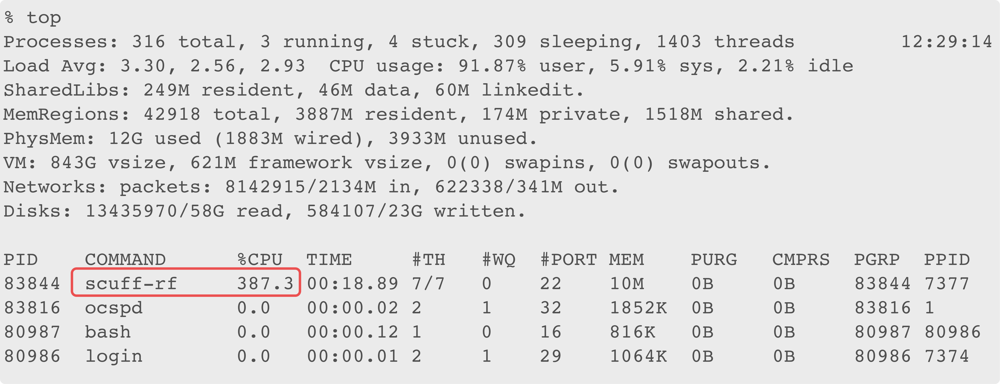

Installing scuff-em
The scuff-em source distribution is packaged with the standard gnu autotools build environment. If you have experience installing autotools-based software packages, you should have no trouble installing scuff-em via your typical procedures, although you are encouraged to skim the general comments section below before you start.
If you aren't an autotools expert, you should still be able to install scuff-em without much trouble by following the OS-specific instructions below.
In either case, if you have any trouble installing scuff-em, please file an issue on the scuff-em GitHub page.
1. General comments about installing scuff-em
External packages
scuff-em relies on a small number of well-established free open-source software packages to implement certain non-essential functionality (see the OS-specific instructions below for guidance on how to install these). scuff-em can be compiled and installed without any of these packages, but in this case the code will be somewhat crippled.
-
If you actually want to solve scattering problems (instead of just setting them up), you will need LAPACK/BLAS or an equivalent replacement such as the Intel MKL. If you do not already have your own favorite solution for this, I highly recommend the excellent open-source (openblas)(http://www.openblas.net/) package, which includes both LAPACK and BLAS and automatically tunes itself for optimal performance on your hardware.
-
If you want the capacity to write output files in the standard HDF5 binary format, you will need HDF5.
-
If you want to compile the python interface, you will need the python development files and the numpy package, as well as the swig interface-generator package.
-
Although not required to install, compile, or use scuff-em, gmsh is an extremely valuable open-source meshing and visualization tool that is used throughout the scuff-em documentation.
-
My libgdsii package contains a simple GDSII-to-GMSH file converter utilities for extracting shapes and other information from GDSII files
Status of the GitHub repository
After installing external packages, you will fetch the scuff-em source code from its repository hosted on GitHub (see specific instructions below). The current build status of the scuff-em master branch is:

Setting up an informative command-line prompt
Regardless of the specific OS you're running (Linux, MacOS, or Windows), the installation process will involve typing commands at a prompt in a console window. Unfortunately, in most cases the default prompt is not particularly informative---in particular, it doesn't tell you the current working directory (which can be easy to forget when switching among folders in a complex build process) or the current host name (which can be easy to forget when you're frequently logging in and out of remote machines.) Thus, for command-line work I find it useful to set up a prompt that includes this information, which you can do as follows:
% export PS1='$HISTCMD '`hostname`' $PWD <> ' 34 mac-56-129-14.mit.edu /Users/homereid <>
Note that the prompt now tells me my current working
directory (/Users/homereid) and the name of the
machine (mac-56-129-14.mit.edu) so I don't lose track
of where I am. (The 34 refers to the number of commands
I've executed in this console session thus far.)
If you find the above command useful, you may copy
it into your ${HOME}/.bashrc file, in which case
the informative prompt will be set up automatically
whenever you open a console window.
Configure options
After fetching the source tree, you will run a command that automatically sniffs out the environment on your machine to configure the procedure that will be used to build scuff-em. As detailed in the OS-specific instructions below, this command takes the form
% sh autogen.sh [OPTIONS]
the first time you run it after fetching the source, or simply
% configure [OPTIONS]
on subsequent builds. For the most part, this step will
automatically handle the various things that need to be done to setup the
build process, but you may guide the process by specifying
various options manually (in the space labeled [OPTIONS] above).
Here are a few of the more salient options you may wish to specify
to customize your build.
Specifying the installation prefix
If the build process succeeds, all files needed to
run scuff-em calculations---including
executable programs, library files, and example calculations---will
be automatically installed in subdirectories of a top-level
directory known as the prefix. The default prefix is /usr/local/,
but you may wish to install scuff-em
in a different location---in particular, you will need to do this
if you don't have administrator privileges on the machine you
are using. This may be done via the configure option --prefix=/path/to/scuff/installation.
For example, to install scuff-em in
a subdirectory of your home directory named scuff-em-installation,
you can say
% configure --prefix=${HOME}/scuff-em-installation [other options]
-
Binary executable files (like
scuff-scatterandscuff-rf) will be in${HOME}/scuff-em-installation/bin. -
Library files (like
libscuff.so) will be in${HOME}/scuff-em-installation/lib. -
The scuff-em example files (like
YagiUdaAntennas) will be in${HOME}/scuff-em-installation/share/scuff-em/examples.
If you go this route, you will probably want to add the location of the scuff-em binary executables to your execution path by saying
% export PATH=${PATH}:${HOME}/scuff-em-installation/bin
Now you will be able to run command-line codes like scuff-rf
from any directory and the OS will know where to find the
program file.
Specifying locations of external libraries
In some cases, external packages used in the SCUFF-EM compilation
process may be installed in non-standard locations on your system.
In this case, you may need to set the CPPFLAGS and/or LDFLAGS
environment variables to specify the locations of library header
files and binary files, respectively.
For example, on my (Ubuntu-based) Linux system, the HDF5 library
is provided by the libhdf5-openmpi-dev package, which
places the HDF5 header files in /usr/include/hdf5/openmpi and
the HDF5 library binaries in /usr/lib/x86_64-linux-gnu/hdf5/openmpi.
Thus, when I configure to build scuff-em
I specify these paths, like this:
% configure CPPFLAGS=-I/usr/include/hdf5/openmpi LDFLAGS=-L/usr/lib/x86_64-linux-gnu/hdf5/openmpi [other options]
Note: To figure out where a package like libhdf5-openmpi-dev installs
its files, you can use the command dpkg --listfiles:
% dpkg --listfiles libhdf5-openmpi-dev .... .... /usr/include/hdf5/openmpi/H5PTpublic.h /usr/include/hdf5/openmpi/H5api_adpt.h .... .... /usr/lib/x86_64-linux-gnu/hdf5/openmpi/libhdf5_hl.a /usr/lib/x86_64-linux-gnu/hdf5/openmpi/libhdf5.a .... ....
Using the MPI compilers
scuff-em makes heavy use of
openmp-based shared-memory multithreading to accelerate tasks
such as BEM matrix assembly. Compiling with OpenMP support is enabled by default, but if you wish to disable it
you may use the --without-openmp option to configure. (But you will be sacrificing a lot of speed if your
system has more than one CPU core available!)
In some cases, you may need to use the MPI-aware compilers when
building scuff-em; this is true, in particular,
if you are using a parallel version of the HDF5 libraries.
In this case,
just set the CC and CXX environment variables to
the names of the MPI C and C++ compilers (usually mpicc and mpic++) before
configuring:
% export CC=mpicc % export CXX=mpic++ % ./configure [OPTIONS]
Disabling the python interface to speed the build process
Compiling the python interface is slow---it accounts for
more than half of the build time on some systems.
If you don't need the python interface to scuff-em,
use the configure option --without-python
to accelerate the build process.
Parallel make
As described in the OS-specific instructions below,
after the configure process is finished you will type make install
to proceed with the actual build and installation of the code.
If your machine has more than one CPU core, you can accelerate
this process by saying e.g.
% make -j 8 install
(replace 8 by the actual number of CPU cores on your machine).
2. Installing on Debian/Ubuntu-based Linux systems
A. Use apt-get to install external packages
On Debian/Ubuntu Linux systems, you can fetch all of the external packages mentioned above as follows:
% sudo apt-get install libopenblas-dev libhdf5-openmpi-dev python-dev python3-scipy gmsh
B. Clone the GitHub repository and build the code
The procedure should now be as simple as
% git clone https://github.com/HomerReid/scuff-em.git % cd scuff-em % sh autogen.sh --prefix=${HOME}/scuff-em-installation % make -j 8 install
(In the last line, replace 8 with the number of CPU cores
on your machine.)
As discussed above, if this succeeds, the executable files
for the scuff-em application modules
(such as scuff-scatter, scuff-rf, etc.) will be
installed in the directory ${HOME}/scuff-em-installation/bin/,
and the demonstration examples for the various application programs
will be in ${HOME}/scuff-em-installation/share/scuff-em/examples.
At this point you may proceed to running a computational example
and verifying CPU utilization.
3. Installing on MacOS
The following installation procedure succeeded for me on MacOS Sierra 10.12.3 with XCode version 8.1 and HomeBrew pre-installed. All commands are to be entered at the console prompt of a terminal window (and, if you wish, after setting up an informative prompt to help you keep track of where you are in the filesystem).
A. Use xcode and homebrew to install external packages
A1. Install command-line tools for Apple developer suite
% xcode-select --install
A2. Use homebrew to install required open-source packages
% brew update % brew install gcc --without-multilib % brew install autoconf automake hdf5 openblas
The second command here appears to be necessary---even if GCC is already installed on your system---to build anything with OpenMPI support, which (as noted above) is important for achieving good scuff-em performance on machines with more than one CPU core.
You will most likely also want to install gmsh. (Although gmsh is available within HomeBrew, the HomeBrew-installed version seemed to be lacking graphics support when I tried it, so instead I installed it from the gmsh website, but YMMV.)
B. Clone the GitHub repository and build the code
On the system I used (MacOS Sierra 10.12.3, XCode version 8.1), the setup protocol outlined above has the following quirks:
- OpenMPI codes must be compiled with
gcc-7org++-7with the-fopenpcompiler flag. - The Homebrew installation of openblas leaves it in a nonstandard location, which must then be specified explicitly when building codes.
The following script accomodates these quirks
while fetching the latest scuff-em source
repository from GitHub, building, and installing in the
parent directory specified by the --prefix option below:
##!/bin/bash export CC="gcc-7 -fopenmp" export CXX="g++-7 -fopenmp" export CPPFLAGS="-I/usr/local/opt/openblas/include" export LDFLAGS"=-L/usr/local/opt/openblas/lib" export BLAS_LIBS="-lopenblas" git clone https://GitHub.com/HomerReid/scuff-em.git cd scuff-em sh autogen.sh --prefix=${HOME}/scuff-em-installation make install -j 4
As discussed above, for a system with e.g. 8 CPU cores
you would say make -j 8 instead of make -j 4 in
the last line.
If this succeeds , you may proceed to running a computational example and verifying CPU utilization.
4. Installing on Windows
5. Run a scuff-em computational example and check CPU utilization
If the build and installation succeed, you're in business to run a scuff-em calculation and verify that your machine's resources are being fully utilized. For example, to compute input impedance vs. frequency for a Yagi-Uda antenna, try:
export PATH=${PATH}:${HOME}/scuff-em-installation/bin cd ${HOME}/scuff-em-installation/share/scuff-em/examples/YagiUdaAntennas . RunScript.SZParms
This calculation should take anywhere between 10 seconds and a minute
depending on your CPU configuration. While the calculation is
running in one terminal window, open a second terminal window and
run top to monitor system performance---in particular,
to verify that scuff-rf is properly using all of your CPU
cores. On the system I used, which has 4 CPU cores, this looks
like this:

The red-framed portion of the display here is the part you
care about: you want the CPU utilization reported
for scuff-rf to be close to , where is the
number of CPU cores on your machine. If you see something like this,
then scuff-em was built properly to
take advantage of your machine's resources. On the other hand,
if the CPU utilization reported for scuff-rf bounces around
near 100 %, then (assuming your machine has more than one CPU
core!) your scuff-em build is suboptimal---calculations
will work and will yield correct answers, but at a fraction
the speed that should be available on your machine.
Note: On some (but not all) Linux systems I have
found it necessary to set the environment variable GOMP_CPU_AFFINITY
to achieve maximum multithreaded performance in
scuff-em calculations. If you have an 8-core
machine, say something like
% export GOMP_CPU_AFFINITY="0-7"
(for a machine with N cores, replace the 7 with N-1).
I don't understand why this is needed in some cases but not
others---if you have any ideas let me know!
6. Building for debugging
If you would like to run scuff-em API codes in a debugger like gdb, you will want to modify the build options to (a) include debugging symbols, (b) turn off optimization, (c) disable openmp multithreading, which does not play well with GDB.
Here is the script that works for me to achieve these goals:
##!/bin/bash CC="gcc -ggdb -O0" CXX="g++ -ggdb -O0" export CFLAGS="-O0" export CXXFLAGS="-O0" sh autogen.sh --enable-debug --without-openmp --disable-shared
(It shouldn't be necessary to have to add -O0 to both the
environment variables and the compiler command lines, but
this seems to be the only way things work for me.)
After running this script to reconfigure for building with
compiling support, you will want to make clean; make
to rebuild everything with debugging support. Of course,
after you are finished debugging you will need to reconfigure
with debugging support removed and then re-do the
clean build. Because this is time-consuming, I typically
maintain two separate copies of the code base, one for
debugging and one for running at full speed.
Once debugging support has been added, you can run the code in gdb. Here's a sample session:
% gdb /path/to/debug/repository/bin/scuff-ldos (gdb) set args < scuff-ldos.args (gdb) break GetHalfSpaceDGFs Breakpoint 1 at 0x409626: file AnalyticalDGFs.cc, line 217. (gdb) run Breakpoint 1, GetHalfSpaceDGFs (Omega=..., kBloch=0x7fffffffd5c0, zp=0.10000000000000001, LBasis=0x7fffffffd380, MP=0x130a7c0, RelTol=0.01, AbsTol=1e-10, MaxCells=1000, GE=0x7fffffffd3a0, GM=0x7fffffffd430) at AnalyticalDGFs.cc:217 217 double BZVolume=GetRLBasis(LBasis, RLBasis); (gdb) print Omega $1 = {_M_value = 0.10000000000000001 + 0 * I} (gdb) u 230 GetHalfSpaceDGFs (Omega=..., kBloch=0x7fffffffd5c0, zp=0.10000000000000001, LBasis=0x7fffffffd380, MP=0x130a7c0, RelTol=0.01, AbsTol=1e-10, MaxCells=1000, GE=0x7fffffffd3a0, GM=0x7fffffffd430) at AnalyticalDGFs.cc:230 230 cdouble Sum[18]; (gdb) print Data->Epsilon $2 = {_M_value = -45765.335680436379 + 115960.58424811834 * I}
Note: If you have a better debugging solution that does not require steps (b) and/or (c) above , please let me know about it. It stinks to have to run the codes at greatly reduced speed when debugging, because often the problem spots lie after expensive sections like BEM matrix assembly, and then it takes forever for the code to run in the debugger to get there.